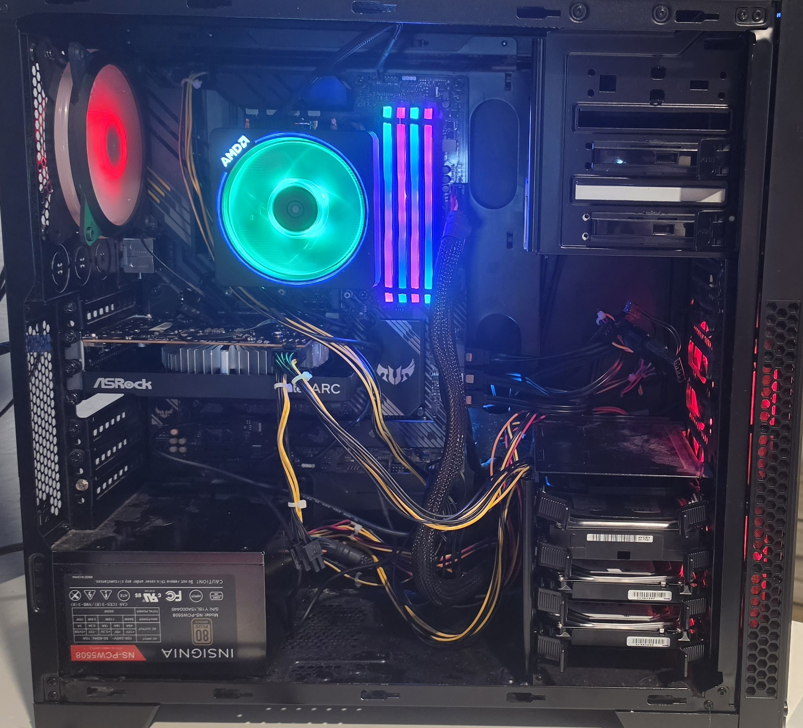
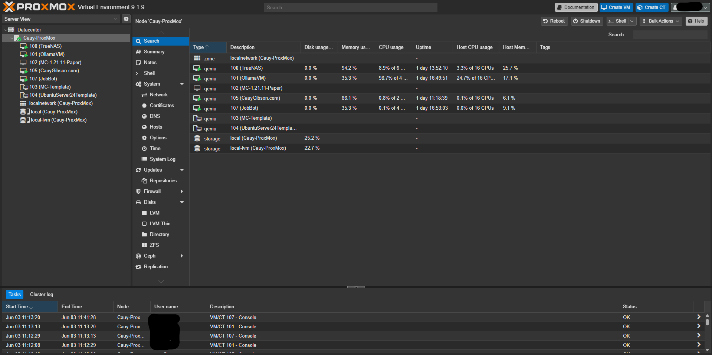
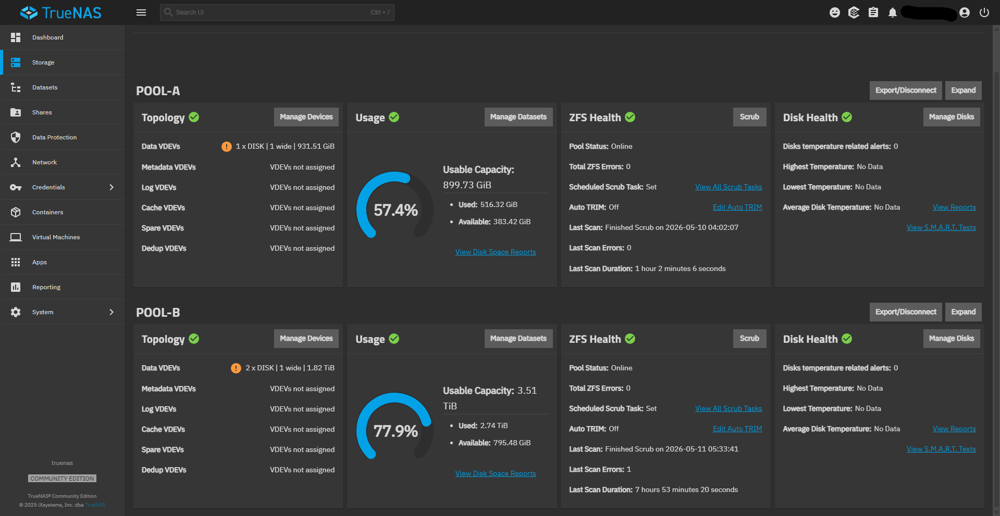
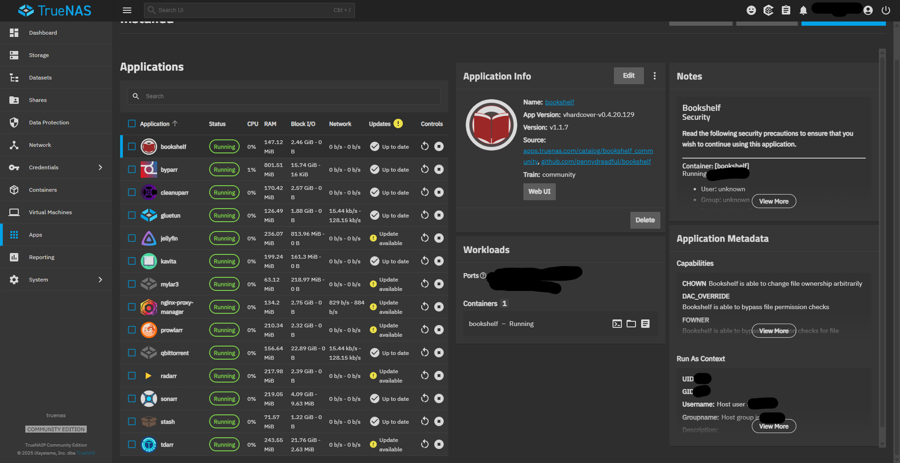
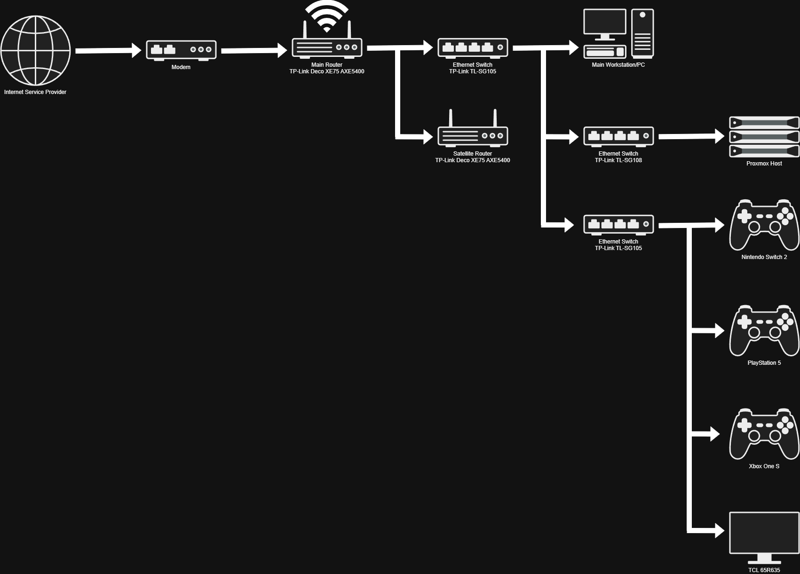
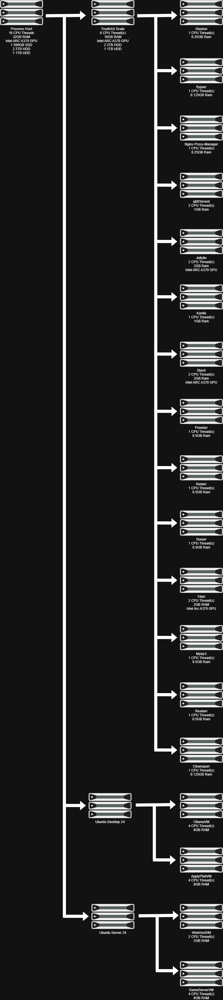
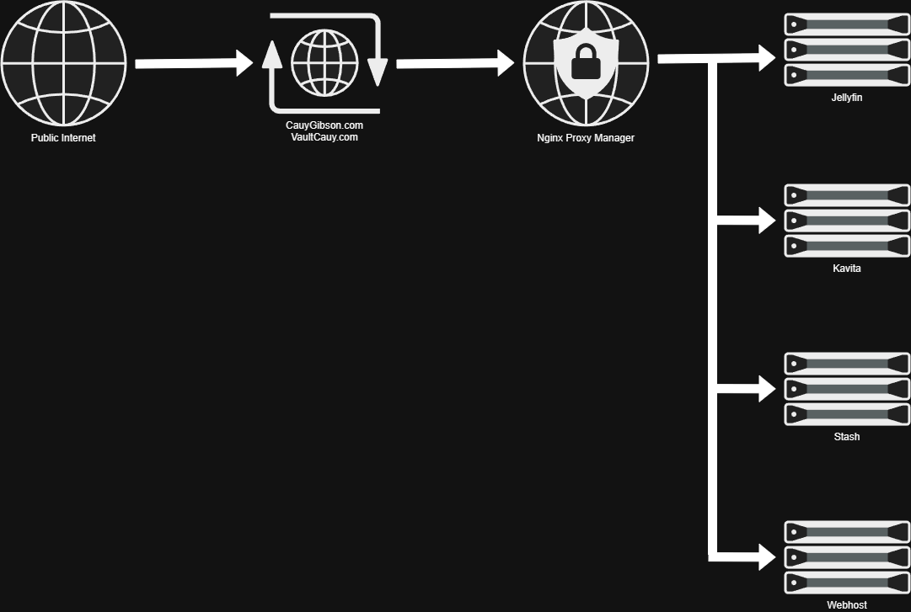
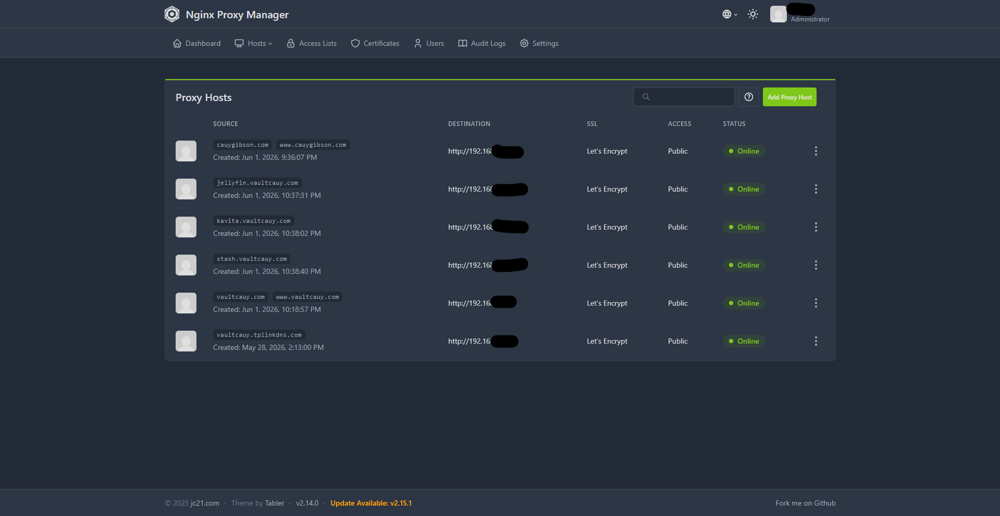

Homelab Infrastructure
Proxmox Virtualization Host
- Ryzen 7 5700X
- 32GB DDR4 3200MHz
- Intel Arc A370
- 2x 2TB HDD
- 1x 1TB HDD
- 1x 500GB SSD
Primary virtualization platform running multiple Linux VMs and services. Used for self-hosting, storage, media services, game servers, and development projects.


TrueNAS Scale Storage Server
Storage
- POOL-A: 1TB Stripe
- POOL-B: 2x 2TB Stripe
- ACL Based Permissions
- SMB File Sharing
Applications
- Jellyfin
- Kavita
- Stash
- Mylar3
- Sonarr
- Radarr
- Prowlarr
- qBittorrent
- Tdarr
- Gluetun VPN


Networking & Remote Access
- TP-Link Deco Mesh Network
- Static IP Management
- Port Forwarding
- DDNS Configuration
- Nginx Proxy Manager
- Let's Encrypt SSL Certificates
- HTTPS Reverse Proxy
Public services exposed through HTTPS using Nginx Proxy Manager and Let's Encrypt certificates.




Game Servers
- Minecraft
- Palworld
- Factorio
Ubuntu Server based game hosting using SSH administration, systemd services, automated startup scripts, log monitoring and Discord integration.